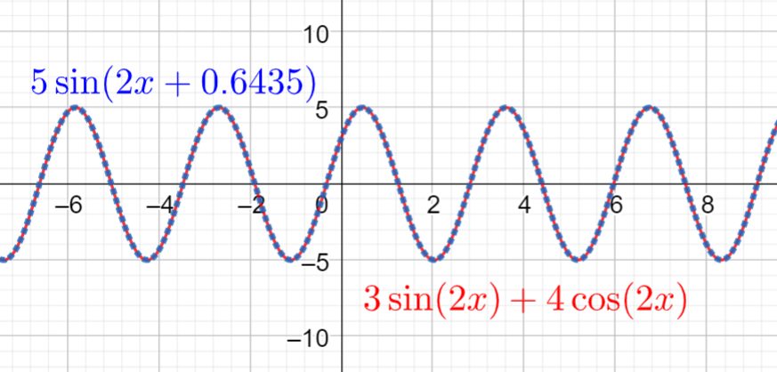

Toisen kertaluvun differentiaaliyhtälöt
Contents
Toisen kertaluvun differentiaaliyhtälöt#
Toisen kertaluvun differentiaaliyhtälö sisältää funktion \(y\) toista derivaattaa \(y''\). Vakiokertoiminen toisen kertaluvun differentiaaliyhtälö on muotoa \(y''+ay'+by=f(x)\). Tässä tarkastelu rajoitetaan pelkästään homogeenisiin yhtälöihin, jotka ovat siis muotoa \(y''+ay'+by=0\). Yleisesti toisen kertaluvun vakiokertoimisen differentiaaliyhtälön ratkaisu on homogeenisen ja epähomogeenisen yhtälön ratkaisujen summa, siis \(y=y_h+y_t\).
Homogeeniset toisen kertaluvun yhtälöt#
Homogeenisille yhtälölle \(y''+ay'+by=0\) ratkaisu \(y_h\) löytyy seuraavasti:
valitaan yritteeksi ratkaisu \(y_h=e^{mx}\)
lasketaan yritteelle derivaatat \(y_h'=me^{mx}\) ja \(y_h''=m^2 e^{mx}\)
kirjoitetaan alkuperäinen yhtälö yritteen avulla: \(m^2 e^{mx} + am e^{mx} + be^{mx} = 0\)
sievennetään yhtälöä valitsemalla yhteiseksi tekijäksi \(e^{mx}\): \(e^{mx}(m^2 + am + b) =0\)
tulon nollasäännön perusteella riittää nyt ratkaista yhtälö \(m^2 + am + b = 0\)
Edellisen prosessin viimeistä yhtälöä \(m^2 + am + b= 0\) kutsutaan differentiaaliyhtälön karakteristiseksi yhtälöksi. Koska kyseessä on toisen asteen yhtälö, sille voidaan löytää useampi kuin yksi ratkaisu. Reaaliluvuarvoisia ratkaisuja löytyy yksi kappale, \(m\), tai kaksi kappaletta, \(m_1\) ja \(m_2\). Lisäksi kun otetaan käyttöön kompleksiluvut, voidaan saada ratkaisut \(m=a\pm bi\). Kompleksiarvoisia ratkaisuja saadaan silloin, kun reaalilukujen matematiikassa “yhtälölle ei löyty ratkaisua”.
Toisen asteen yhtälön ratkaisu
Toisen asteen yhtälön \(ax^2+bx+c=0\) ratkaisukaavaksi voidaan johtaa \(x=\frac{-b\pm\sqrt{b^2-4ac}}{2a}\).
Yksi juuri seuraa, kun \(b^2-4ac=0\), esimerkiksi \(x^2+6x+9=0\):
\(x=\frac{-6\pm\sqrt{6^2-4\cdot 1 \cdot 9}}{2\cdot 1}=\frac{-6\pm 0}{2}=-3\)
Kaksi reaaliarvoista juurta seuraa, kun \(b^2-4ac > 0\), esimerkiksi \(x^2+x-6=0\):
\(x=\frac{-1\pm\sqrt{1^2-4\cdot 1 \cdot (-6)}}{2\cdot 1}=\frac{-1\pm 5}{2}\)
\(x_1=\frac{-1+5}{2}=2, x_2=\frac{-1-5}{2}=-3\)
Kompleksiarvoiset juuret seuraavat, kun \(b^2-4ac < 0\). Tällöin neliöjuuren sisälle jää negatiivinen luku. Se pitää esittää imaginaarilukuna huomioiden, että \(i^2=-1\). Esimerkiksi luku \(-4\) voidaan ilmaista muodossa \(-1\cdot 4=i^2 \cdot 4\). Tällöin tästäkin luvusta voi laskea neliöjuuren: \(\sqrt{-4}=\sqrt{4i^2 }=2i\).
Esimerkki toisen asteen yhtälöstä, josta tulee kompleksinen ratkaisu, on \(x^2+2x+3=0\):
\(x=\frac{-2\pm\sqrt{2^2-4\cdot 1 \cdot 3}}{2\cdot 1}=\frac{-2\pm\sqrt{-8}}{2}\)
\(x=\frac{-2\pm\sqrt{8i^2}}{2}=\frac{-2\pm \sqrt{8}i}{2} = \frac{-2\pm 2\sqrt{2}i}{2}= -1\pm \sqrt{2}i\)
Kompleksiarvoinen juuri, jossa ei ole ollenkaan reaaliosaa, saadaan esimerkiksi tapauksessa \(x^2+5=0\):
\(x=\frac{-0\pm\sqrt{0^2-4\cdot 1 \cdot 5}}{2\cdot 1}=\frac{\sqrt{-20}}{2}=\frac{\sqrt{20 i^2}}{2} = \frac{\sqrt{4\cdot 5 i^2}}{2} = \frac{2 \sqrt{5} i}{2} = \sqrt{5}i\)
Esimerkki
Muodosta differentiaaliyhtälöä \(3y''+2y'=5y\) vastaava karakteristinen yhtälö.
Ratkaisu
Muokataan yhtälö muotoon \(y''+ay'+by=0\) vähentämällä ensin termi \(5y\) yhtälön molemmilta puolilta:
\(3y''+2y'-5y=0\)
Jotta termin \(y''\) kertoimeksi saadaan 1, niin yhtälön kumpikin puoli pitää jakaa luvulla \(3\):
\(y''+\frac{2}{3}y'-\frac{5}{3}y=0\)
Differentiaaliyhtälöstä muodostuu karakteristinen yhtälö \(m^2+\frac{2}{3}m-\frac{5}{3}=0\).
Erilaisia värähtelyjä#
Toisen kertaluvun homogeenisen differentiaaliyhtälön ratkaisu riippuu siitä, mitkä ovat karakteristien yhtälön ratkaisut. Oleellista on, että kaikissa kolmessa tapauksessa ratkaisu muodostuu kahden yhtälön \(y_1\) ja \(y_2\) summasta. Ratkaisujen lukumäärän perusteella differentiaaliyhtälölle saadaan seuraavat ratkaisut:
Kaksi reaaliarvoista juurta \(m_1\) ja \(m_2\): \(y=C_1 e^{m_1 x} + C_2 e^{m_2 x}\)
Perustelu
Merkitään ratkaisuja \(y_1=C_1 e^{m_1 x}\) ja \(y_2=C_2 e^{m_2 x}\).
Muodostetaan aluksi ratkaisun \(y_1\) ensimmäinen ja toinen derivaatta:
\(y_1'=C_1 m_1 e^{m_1 x}, y_1''=C_1 m_1^2 e^{m_1 x}\)
Sijoitetaan nämä sekä ratkaisu \(y_1\) differentiaaliyhtälöön:
\(C_1 m_1^2 e^{m_1 x}+aC_1 m_1 e^{m_1 x}+ b C_1 e^{m_1 x}=0\)
Kaikissa termeissä esiintyy kertoimena \(C_1 e^{m_1 x}\), joten yhtälö voidaan jakaa sillä puolittain ja se sievenee seuraavaan muotoon:
\(m_1^2+am_1+ b =0\)
Koska \(m_1\):n tiedetään olevan yhtälön ratkaisu, niin yhtälön vasen puoli on nolla ja tällöin yhtälö on tosi.
Vastaavasti voidaan muodostaa ratkaisun \(y_2=C_2 e^{m_2 x}\) ensimmäinen ja toinen derivaatta, ja todeta että nekin toteuttavat differentiaaliyhtälön. Tällöin myös ratkaisujen summa toteuttaa differentiaaliyhtälön.
Yksi reaaliarvoinen juuri \(m\): \(y=(C_1 x + C_2) e^{mx}\)
Perustelu
Merkitään ratkaisuja \(y_1=C_1 x e^{mx}\) ja \(y_2=C_2 e^{mx}\).
Muodostetaan ratkaisun \(y_1\) ensimmäinen ja toinen derivaatta:
\(y_1'=C_1 e^{mx}+C_1 mx e^{mx}=C_1(1+mx)e^{mx}\)
\(y_1''= D (C_1 (1+mx)) e^{mx} + C_1 (1+mx) D e^{mx}\)
\(y_1''=C_1 m e^{mx} + C_1 (1+mx) m e^{mx}\)
\(y_1''=C_1 m e^{mx} + C_1 m e^{mx} + C_1 m^2 x e^{mx}\)
\(y_1''=C_1 e^{mx} (m+m+m^2 x)\)
\(y_1''=C_1 e^{mx} (2m+m^2x)\)
Sijoitetaan ratkaisu ja sen derivaatat differentiaaliyhtälöön:
\(C_1 e^{mx} (2m+m^2x) + a C_1(1+mx)e^{mx} + b C_1 x e^{mx} = 0\)
Kaikissa termeissä esiintyy \(C_1 e^{mx}\), joten yhtälön voi jakaa sillä puolittain:
\(2m+m^2x + a (1+mx) + bx = 0\)
Sievennetään yhtälön vasen puoli avaamalla sulut:
\(2m+m^2x+a+amx+bx=0\)
Ryhmitellään termejä uudelleen:
\((m^2+am+b)x + 2m+a = 0\)
Tekijä \((m^2+am+b)\) on nolla, sillä \(m\) on luku, jolla karakteristinen yhtälö saa arvon nolla. Lisäksi termi \(2m+a\) on nolla, sillä koska ratkaisuja tiedetään olevan vain yksi, niin toisen asteen yhtälön ratkaisukaavalla saadaan
\(m=\frac{-a\pm \sqrt{a^2-4\cdot 1 \cdot b}}{2\cdot 1}=-\frac{a}{2}\)
Näin ollen differentiaaliyhtälö sievenee muotoon \(0=0\) eli tosi kaikilla \(x\):n arvoilla.
Edellisen kohdan perusteella myös ratkaisu \(y_2\) toteuttaa differentiaaliyhtälön. Näin ollen näiden ratkaisujen summakin toteuttaa differentiaaliyhtälön.
Kompleksiset juuret \(m=a+bi\): \(y=e^{ax}(C_1 \cos(bx) + C_2 \sin(bx))\)
Perustelu
Jos juuret olisivat reaalisia, niin ensimmäisen kohdan perusteella ratkaisu olisi \(y=D_1 e^{(a+bi) x}+D_2 e^{(a-bi) x}\). Tässä vakioiksi on valittu \(D_1\) ja \(D_2\), jotta kirjaimet \(C_1\) ja \(C_2\) säilyvät käytettäväksi lopullisessa ratkaisussa.
Sievennetään termejä hieman:
\(y=D_1 e^{ax + bix}+D_2 e^{ax-bix}\)
\(y=D_1 e^{ax} e^{bix}+D_2 e^{ax} e^{-bix}\)
Kompleksiluvuista tutun Eulerin kaavan mukaisesti \(e^{i\phi}=\cos{\phi}+i\sin{\phi}\). Näin ollen voidaan kirjoittaa:
\(y=D_1 e^{ax} (\cos{bx}+i\sin{bx}) +D_2 e^{ax} (\cos{-bx}+i\sin{-bx})\)
Trigonometrisille funktioille pätee yleisesti \(\cos{\alpha}=-\cos{\alpha}\) ja \(\sin{-\alpha}=-\sin{\alpha}\), joten yhtälö sievenee muotoon
\(y=D_1 e^{ax} (\cos{bx}+i\sin{bx}) +D_2 e^{ax} (\cos{bx}-i\sin{bx})\)
Avataan sulut:
\(y=D_1 e^{ax} \cos{bx}+ i D_1 e^{ax} \sin{bx} +D_2 e^{ax} \cos{bx}-i D_2 e^{ax} \sin{bx}\)
Järjestellään termejä uudelleen:
\(y=e^{ax}\left((D_1 +D_2) \cos{bx}+ i (D_1-D_2) \sin{bx}\right)\)
Vakiokertoimet voidaan esittää lyhyemmin muodossa \(D_1+D_2=C_1\) ja \(D_1-D_2=C_2\).
Kaikki vaihtoehdot vastaavat jonkinlaista voimistumista tai vaimenemista. Kompleksiarvoisiin juuriin liittyy lisäksi värähtelyä.
Tarkastellaan aluksi reaaliarvoisia juuria. Jos ainoa reaalinen juuri \(m\) tai molemmat reaaliset juuret \(m_1, m_2\) ovat negatiivisia, niin funktiosta tulee vähenevä, eli sen arvot pienenevät kun muuttujat arvot kasvavat. Jos taas ainoa juuri \(m\) tai vähintään toinen juurista \(m_1, m_2\) on positiivinen, funktio on kasvava.
Kompleksiarvoiset juuret aiheuttavat sen, että funktion arvot heilahtelevat edestakaisin. Tällöin kyseessä on värähtely. Se voi olla vaimenevaa tai kasvavaa tai pysyä samanlaisena. Jos kompleksiluvun reaaliosa on positiivinen, niin värähtely on voimistuvaa, ja jos reaaliosa on negatiivinen, niin värähtely on vaimenevaa. Jos juuri on kuitenkin kokonaan imaginaarinen, värähtelyn amplitudi ei muutu. Värähtelyä tapahtuu esimerkiksi kulkuneuvojen jousituksessa, heilureissa ja virtapiireissä.
Esimerkki
Ratkaise differentiaaliyhtälöt
a) \(y''-2y'-3y=0\), b) \(y''-4y'+4y=0\), c) \(y''-y'+\frac{5}{4}y=0\).
Ratkaisu
a) Ratkaistaan karakteristinen yhtälö \(m^2 -2m-3=0\):
\(m=\frac{-(-2)\pm\sqrt{(-2)^2-4\cdot 1 \cdot (-3)}}{2\cdot 1} = \frac{2\pm\sqrt{16}}{2} = \frac{2\pm 4}{2}\)
\(m_1 = \frac{2+4}{2}=3, m_2= \frac{2-4}{2}=-1\)
Ratkaisu on siis \(y(x)=C_1 e^{-x}+C_2 e^{3x}\).
b) Ratkaistaan karakteristinen yhtälö \(m^2-4m+4=0\):
\(m=\frac{-(-4)\pm\sqrt{(-4)^2-4\cdot 1 \cdot 4}}{2\cdot 1} = \frac{4\pm 0}{2} = 2\)
Ratkaisu on siis \(y(x)=(C_1 x+C_2)e^{2x}\).
c) Ratkaistaan karakteristinen yhtälö \(m^2-m+\frac{5}{4}=0\):
\(m=\frac{-(-1)\pm\sqrt{(-1)^2-4\cdot 1 \cdot \left(\frac{5}{4}\right)}}{2\cdot 1} = \frac{1\pm\sqrt{-4}}{2} = \frac{1\pm\sqrt{4i^2 }}{2} = \frac{1\pm 2i}{2} = \frac{1}{2}\pm i\).
Ratkaisu on siis \(y(x)=e^{\frac{1}{2}t}(C_1 \cos{x}+C_2 \sin{x})\).
Värähtely sinifunktiona#
Kun tarkastellaan värähteleviä tai jaksollisia ilmiöitä, ei värähtelyn ilmaisuun käytetä sekä kosini- että sinifunktiota, vaan pelkästään jompaakumpaa. Opetellaan tässä, mitä kosini- ja sinifunktion summa muutetaan pelkäksi sinifunktioksi. Funktion vakiokerroin muuttuu ja funktion argumenttiin lisätään vaihesiirto \(\phi\). Toisin sanoen funktio \(y=A \sin{cx} + B \cos{cx}\) muuttuu muotoon \(y=C\sin{(cx+\phi)}\). Vakiot \(C\) ja \(\phi\) määräytyvät seuraavasti:
\(C=\sqrt{A^2+B^2}\), \(\phi=\arctan{\frac{B}{A}}\)
Perustelu
Muunnos perustuu erääseen trigonometristen funktioiden laskusääntöön \(\sin{(x+y)}=\sin{x}\cos{y}+\sin{y}\cos{x}\). Tämän säännön mukaan siis \(\sin{(cx+\phi)}=\sin{cx}\cos{\phi}+\sin{\phi}\cos{cx}\). Toisaalta tulee olla \(A \sin{cx} + B \cos{cx}=C \sin{(cx+\phi)}\). Saadaan siis yhtälö:
\(A \sin{cx} + B \cos{cx} = C \left(\sin{cx}\cos{\phi}+\sin{\phi}\cos{cx}\right)\)
josta oikea puoli sieventämällä saadaa esitysmuoto
\(A \sin{cx} + B \cos{cx} = C \sin{cx}\cos{\phi}+C \sin{\phi}\cos{cx}\)
Muodostetaan yhtälön perusteella yhtälöpari, jossa ensimmäinen yhtälö vastaa \(\sin{cx}\):n kertoimia ja toinen yhtälö \(\cos{cx}\):n kertoimia. Niidenhän pitää olla samat. Yhtälöpari on siis
\(\begin{equation}\begin{cases} A=C \cos{\phi} \\ B=C\sin{\phi} \end{cases}\end{equation}\)
Korotetaan molemmat yhtälöt puolittain toiseen potenssiin:
\(\begin{equation}\begin{cases} A^2=C^2 \cos^2{\phi} \\ B^2=C^2 \sin^2{\phi} \end{cases}\end{equation}\)
Lasketaan yhtälöt yhteen:
\(A^2+B^2=C^2(\cos^2 {\phi}+\sin^2 {\phi})\)
Koska kaikille kulmille pätee \(\cos^2{\phi}+\sin^2 {\phi}=1\), niin \(A^2+B^2=C^2\) ja edelleen \(C=\pm \sqrt{A^2+B^2}\).
Vaihe-ero \(\phi\) saadaan kun jaetaan yhtälöparin toinen yhtälö ensimmäisellä:
\(\frac{B}{A}=\frac{\sin{\phi}}{\cos{\phi}}\)
eli \(\tan{\phi}=\frac{B}{A}\) ja edelleen \(\phi=\arctan{\frac{B}{A}}\). Kulmia, jotka toteuttavat ehdon, on äärettömän monta. Jos rajoitetutaan nollan ja suoran kulman välisiin kulmiin, tulee vakiolle \(C\) aina positiivinen arvo.
Esimerkki
Esitä funktio \(y=3 \cos{(2x)} + 4 \sin{(2x)}\) yhtenä sinifunktiona.
Ratkaisu
Funktio on muotoa \(C \sin{(2x+\phi)}\).
Kerroin \(C\) saadaan kosinin ja sinin kertoimien avulla: \(C=\sqrt{3^2+4^2}=\sqrt{25}=5\).
Vaihe-ero \(\phi\) saadaan kosinin ja sinin kertoimien suhteen avulla: \(\phi=\arctan{\frac{3}{4}}\) josta laskimella saadaan \(\phi=0.6435\) radiaania.
Funktioksi saadaan siis \(y=5 \sin{(2x+0.6435)}\).
Tällaisten laskujen tuloksen voi aina tarkistaa piirtämällä kuvaajat kummastakin funktioista. Niiden tulisi tietenkin osua päällekkäin, kuten seuraavassa kuvassa. Pientä virhettä voi aiheutua desimaalilukujen pyöristyksestä.
